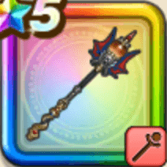

はかいのことわり
攻略班 9.0点 / ラリホーベホイミ破壊の瞑想死滅の極光破壊の礼賛神降ろしの儀偶数の恵み・とくぎ強化
くわしい特徴
【レベル別習得スキル】 Lv1【大魔道士】こうげき魔力+5 Lv1ジバリア属性じゅもんダメージ+10% Lv5ラリホー（消費MP：10）敵1体を眠りにさそう Lv10ベホイミ（消費MP：12）仲間ひとりのHPをかなり回復する Lv15破壊の瞑想（消費MP：20）滅びの想像を巡らせ、自分の与えるスキルダメージと会心率・暴走率を上げる Lv20死滅の極光（消費MP：80）神降ろしLvに応じて、敵全体に威力200~300%+ランダムな敵に1~3回威力50%の敵ごとに有効なメラかジバリア属性の攻魔複合体技ダメージを与える Lv30破壊の礼賛（消費MP：60）敵1体にジバリア属性の呪文絶大ダメージを与え、たまにこうげき呪文の威力を下げる。威力は神降ろしLvに応じて上昇する Lv35ゾンビ系へのダメージ+5% Lv40悪魔系へのダメージ+5% Lv43さいだいMP+12 Lv45こうげき魔力+12 Lv50神降ろしの儀（消費MP：20）戦闘開始時に「神降ろし Lv1」を付与。Lvは自身が戦闘でダメージを受けると確率で上昇し、様々な有利な効果が発生する(効果6ターン) Lv50偶数の恵み・とくぎ強化（消費MP：12）戦闘開始から6ターンの間、偶数ターンの行動開始時毎に与えるスキルダメージを上げる効果を自身に付与する 【限界突破スキル】 1凸じゅもんダメージ+7% 2凸じゅもんダメージ+7% 3凸じゅもんダメージ+7% 4凸じゅもんダメージ+7%